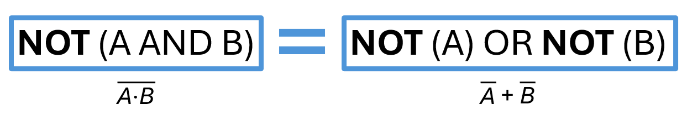
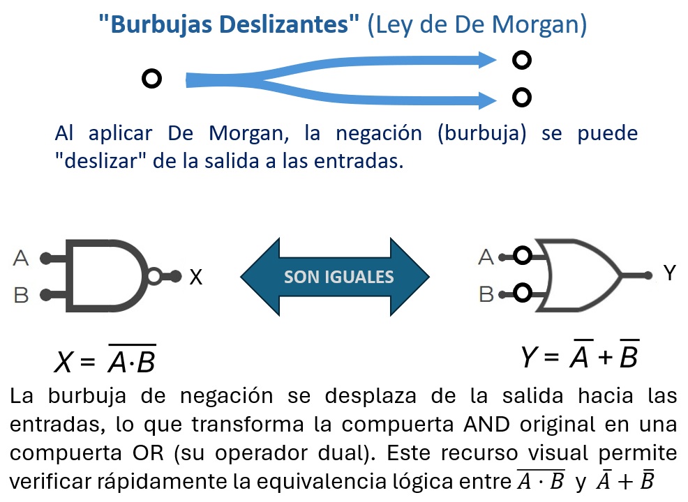
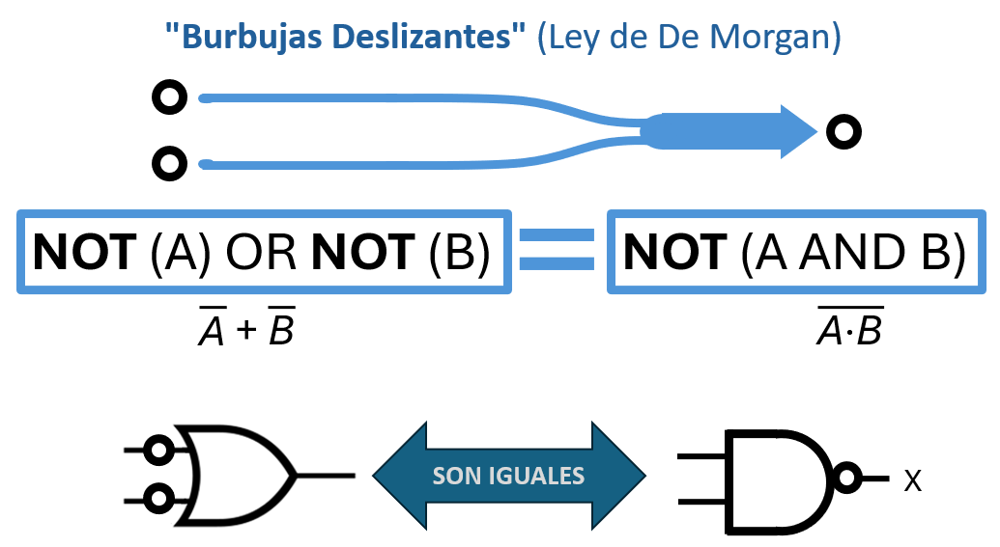

Unidad 2: Lógica Digital - Lección 14
En la lección anterior dibujamos el mapa completo de la verdad. Pero a veces, ese mapa nos sugiere un circuito gigante y costoso. ¿Es obligatorio construirlo así? No. Un buen ingeniero es "tacaño" con los recursos. Hoy aprenderemos los Trucos de Magia Matemática para aplastar ecuaciones monstruosas y convertirlas en soluciones elegantes, pequeñas y baratas.
A veces terminas con una ecuación gigante. ¿Compras 20 chips? ¡No! Usas el álgebra para simplificar. Es como jugar Tetris con la lógica.
Si dices lo mismo dos veces, es como decirlo una sola vez.
$$A + A = A$$
$$A \cdot A = A$$
¿Recuerdas la teoría de conjuntos de la escuela? La unión y la intersección también son operaciones idempotentes.
Esto significa que al unir un conjunto consigo mismo, el resultado es el mismo conjunto original:
$$A \cup A = A$$
Y de manera análoga, al interceptarlo consigo mismo, se obtiene nuevamente el mismo conjunto:
$$A \cap A = A$$
¡La lógica digital sigue las mismas reglas!
$$\bar{\bar{A}} = A$$ (Doble Negación: "No es verdad que no fui yo" = Fui yo)
$$A \cdot \bar{A} = 0$$ (Contradicción: No puedes ser y no ser a la vez)
👀 Ojo al dato (Adelanto Matemático): Aquí asumimos por lógica que solo hay un contrario (\(\bar{A}\)). Pero, ¿podría haber dos? En la Lección 24 (Unidad 3) usaremos esta propiedad de la contradicción para demostrar matemáticamente que el complemento es ÚNICO en todo el universo lógico.
Permiten cambiar compuertas AND por OR. Vital cuando no tienes el chip que necesitas.
La Regla de Oro: "Rompe la barra y cambia el signo".
Negar una multiplicación es sumar las negaciones.
Negar una suma es multiplicar las negaciones.

Fig. 1: De Morgan: Transformar expresiones algebraicas.
Estas combinaciones de operaciones básicas (como "AND negada" o "OR negada") son tan útiles y comunes en electrónica digital que, como veremos en la Lección 18, tienen nombres y símbolos propios: NAND y NOR. Pero por ahora, lo importante es entender la equivalencia lógica que De Morgan nos muestra.
Las Leyes de De Morgan son las más temidas por los estudiantes porque parecen "magia negra". Tu misión es convertirlas en una competencia física que jamás olvidarán. Aquí tienes una dinámica de 5 minutos que no necesita materiales costosos.
Preparación: Pide dos voluntarios (los "Gemelos") y una soga larga o un cable de extensión.
Mientras los gemelos simulan, escribe en la pizarra:
¬(A ∧ B) = ¬A ∨ ¬B → "No es verdad que los dos jalen" = "El primero NO jala O el segundo NO jala"
¬(A ∨ B) = ¬A ∧ ¬B → "No es verdad que al menos uno jale" = "El primero NO jala Y el segundo NO jala"
La lección vital para el maestro: Cuando los estudiantes ven a sus compañeros jalando una soga y escuchan "¡No es verdad que ambos jalen!" mientras uno suelta, el concepto se graba en su memoria motora. ¡La física del cuerpo ancla la matemática abstracta para siempre!
Parte 1: Las 7 Reglas Fundamentales — Ya las usaste en Lecciones 12 y 13. Son tu base sólida.
| # | Nombre · Descripción | Forma AND (·) | Forma OR (+) |
|---|---|---|---|
| 1 | Identidad Base para simplificar expresiones. | \(A \cdot 1 = A\) | \(A + 0 = A\) |
| 2 | Nulo / Dominación El 0 anula en AND, el 1 domina en OR. | \(A \cdot 0 = 0\) | \(A + 1 = 1\) |
| 3 | Idempotencia Repetir una variable no cambia el resultado. | \(A \cdot A = A\) | \(A + A = A\) |
| 4 | Inverso / Complemento Una variable y su opuesto siempre dan 0 (AND) o 1 (OR). | \(A \cdot \bar{A} = 0\) | \(A + \bar{A} = 1\) |
| 5 | Doble Negación Dos negaciones se cancelan. Quita pares de barras innecesarias. | \(\bar{\bar{A}} = A\) | |
| 6 | Conmutatividad El orden de los operandos no altera el resultado. | \(A \cdot B = B \cdot A\) | \(A + B = B + A\) |
| 7 | Asociatividad Los paréntesis se pueden mover. | \(A \cdot (B \cdot C) = (A \cdot B) \cdot C\) | \(A + (B + C) = (A + B) + C\) |
Parte 2: Los 4 "Trucos del Mago" 🪄 — Estas son las reglas que harán que tu ecuación gigante se vuelva pequeña. ¡Son el corazón de esta lección!
| # | Nombre · Descripción | Forma AND (·) | Forma OR (+) |
|---|---|---|---|
| 8 | Distributividad (AND sobre OR) Distribuye AND sobre OR para expandir o factorizar. | \(A \cdot (B + C) = A \cdot B + A \cdot C\) | — |
| 9 | Distributividad (OR sobre AND) Distribuye OR sobre AND para reordenar términos. | — | \(A + (B \cdot C) = (A + B) \cdot (A + C)\) |
| 10 | De Morgan (OR → AND) Convierte OR negado en producto de negaciones. | \(\overline{A + B} = \bar{A} \cdot \bar{B}\) | — |
| 11 | De Morgan (AND → OR) Convierte AND negado en suma de negaciones. | — | \(\overline{A \cdot B} = \bar{A} + \bar{B}\) |
Parte 3: La Regla de Oro — Absorción (Regla #12) 🪄
La que hace desaparecer términos enteros de una sola vez. Es como un "borrador mágico" para expresiones redundantes.
| # | Nombre · Descripción | Forma AND (·) | Forma OR (+) |
|---|---|---|---|
| 12a | Absorción (Forma Básica) Si ya tienes A, agregar términos con A no cambia el resultado. | \(A \cdot (A + B) = A\) | \(A + (A \cdot B) = A\) |
| 12b | Absorción (Forma Dual) Cuando aparece una variable y su negación, se simplifica parcialmente. | \(A \cdot (\bar{A} + B) = A \cdot B\) | \(A + (\bar{A} \cdot B) = A + B\) |
💡 Recuerda: No memorices estas reglas. Úsalas como herramientas para verificar y deducir. Si dudas, haz una mini tabla de verdad de 2 filas para comprobar que la regla se cumple. Eso es lo que hace un buen ingeniero: razonar, no repetir.
💡 ¿Por qué la Absorción es "oro"? Porque con ella puedes eliminar términos completos sin necesidad de expandir ni hacer tablas largas. En la próxima lección (Mapas de Karnaugh), verás cómo esta regla se aplica visualmente al "pegar" unos adyacentes.
Este método convierte a la IA en tu tutor de pensamiento, no en tu calculadora.
Los ingenieros no siempre escribimos fórmulas; usamos este truco visual en los planos para simplificar la mente. Imagina que la negación (la línea arriba de la letra) es físicamente una burbuja que puede deslizarse por los cables.
La Regla de la Mutación:
Puedes deslizar las burbujas a través de la compuerta (de la salida hacia las entradas, o de las entradas hacia la salida), PERO debes pagar un precio: La compuerta muta de forma.
Si tienes una burbuja gigante en la salida (NAND), puedes "empujarla" hacia atrás. Al cruzar la compuerta, la burbuja se divide en dos (una para cada entrada) y la forma AND se convierte en OR.

Fig. 3: La burbuja de salida se desliza, se divide en dos al llegar a las entradas, y la AND muta a OR. Matemáticamente: \(\overline{A \cdot B} = \bar{A} + \bar{B}\).
¡El truco funciona al revés! Si tienes dos burbujas en las entradas de una compuerta OR, puedes empujarlas hacia adelante. Al cruzar, se fusionan en una sola burbuja de salida, y la OR muta a AND.

Fig. 4: Las dos burbujas de entrada se deslizan, se fusionan en la salida, y la OR muta a AND. Matemáticamente: \(\bar{A} + \bar{B} = \overline{A \cdot B}\). (Y lo mismo ocurre con la compuerta NOR mutando a AND con entradas negadas).
Usa lo que aprendiste en la Lección 13. Haz una Tabla de Verdad rápida en tu cuaderno para estas dos ecuaciones de la Figura 2 y verás que dan resultados idénticos:
Mira esta ecuación monstruosa:
Aplicamos De Morgan a la primera parte (\(\overline{A \cdot B} \rightarrow \bar{A} + \bar{B}\)):
Como tenemos dos veces \(\bar{A}\), usamos la regla de Idempotencia (\(\bar{A} + \bar{A} = \bar{A}\)):
¡Listo! Pasamos de una operación compleja a una simple suma. ¡Acabas de ahorrarte tiempo y dinero en el montaje!
Para que veas el poder de la Regla #12, observa este ejemplo:
Aplicando Absorción (Regla 12a en su forma OR):
¡Una compuerta AND completa desaparece! La expresión se reduce a una simple línea.
La Ley de Absorción (\(A + A \cdot B = A\)) es la reina de la optimización, pero los estudiantes suelen subestimarla. Para que entiendan su verdadero valor, tienes que hablarles como si fueran Gerentes de Producción, no estudiantes de matemáticas.
Escribe la ecuación sin simplificar en la pizarra: \(S = A + (A \cdot B)\). Luego, hazles estas preguntas financieras:
La lección vital para el maestro: Cuando le pones un signo de dólar ($) a un teorema matemático, la atención de la clase se dispara al 100%. La Absorción no es álgebra; es economía pura aplicada al silicio.
Dos docentes analizan las Leyes de De Morgan y su papel como "trucos del mago" para simplificar circuitos lógicos. Comparten estrategias para enseñar la idea de "romper la barra y cambiar el signo", cómo evitar errores comunes al aplicar las reglas, y reflexionan sobre la importancia de que los futuros docentes no memoricen, sino que deduzcan y verifiquen con tablas de verdad. También discuten cómo integrar herramientas digitales (como IA o simuladores) para reforzar este proceso.
Tu cuaderno es tu laboratorio pedagógico. Aquí transformas la información en conocimiento útil para tu futura práctica docente.
Resume con tus palabras qué son las Leyes de De Morgan y por qué se llaman "trucos del mago".
Aplica el método a esta expresión: \(\overline{A \cdot B + C}\) (la barra de negación cubre toda la expresión)
🧪 Paso a paso (sigue esta estructura):
Usa este formato cuando consultes una IA generativa para resolver problemas de álgebra de Boole:
Paso 1 (Abstracción): Identifico el Bloque X = \(A \cdot B + C\). La expresión original es \(\overline{X}\).
Paso 2 (Regla #10 - De Morgan OR→AND): \(\overline{A \cdot B + C} = \overline{A \cdot B} \cdot \overline{C}\).
Paso 3 (Regla #11 - De Morgan AND→OR sobre el primer término): \(\overline{A \cdot B} = \bar{A} + \bar{B}\). Sustituyo: \((\bar{A} + \bar{B}) \cdot \bar{C}\).
Paso 4 (Regla #8 - Distributividad): \((\bar{A} + \bar{B}) \cdot \bar{C} = \bar{A}\bar{C} + \bar{B}\bar{C}\).
Explicación física: "El circuito original era una compuerta NOR de tres entradas (A·B y C juntos). Ahora tenemos dos líneas AND (Ā·C̄ y B̄·C̄) que se unen en una OR. Es más fácil de implementar con compuertas básicas."
Mini tabla de verdad (verificación): Para A=1, B=1, C=0: Original = 0, Simplificada = 0 ✓
💡 Recuerda: No copies textualmente. Resume con tus palabras, dibuja, conecta con tu realidad. Tu cuaderno es para ti, no para el profesor. Es donde transformas información en comprensión y preparas tus futuras clases con autenticidad.
🧠 Desafío extra (opcional): ¿Puedes simplificar aún más \(\bar{A}\bar{C} + \bar{B}\bar{C}\) usando la regla de Distributividad al revés (factorización)? ¿Qué regla te permite hacer eso? (Pista: Regla #8 leída de derecha a izquierda).
¡Ya tienes las "tijeras matemáticas" para recortar cualquier ecuación! Pero... hay un detalle. Hasta ahora, yo te he dado las ecuaciones. En el mundo real, los problemas vienen como listas de requisitos (Tablas). ¿Cómo conviertes una Tabla de Verdad en una Ecuación? En la próxima clase, aprenderemos a hacer Ingeniería Inversa para extraer la fórmula mágica directamente desde los datos.